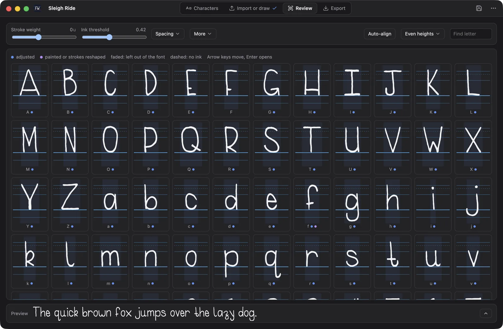
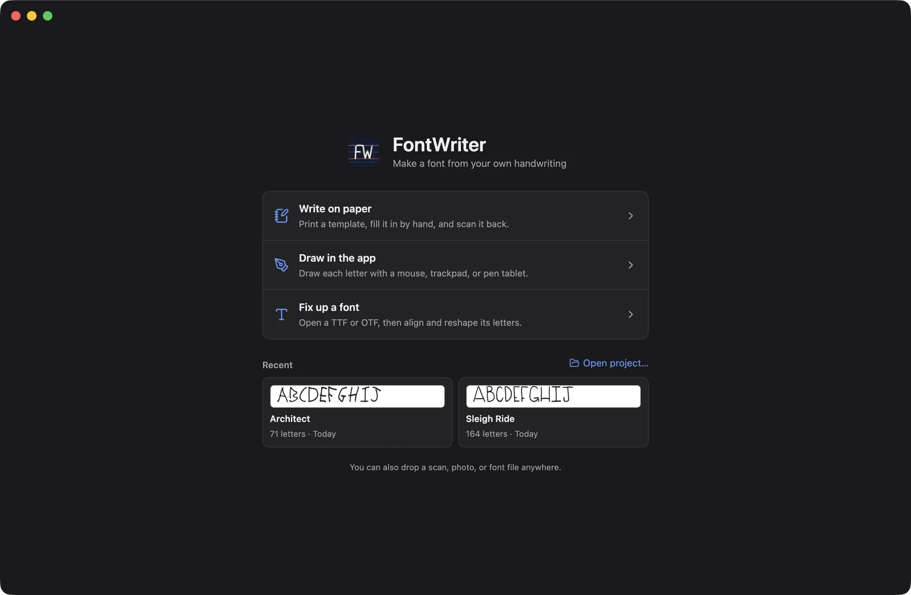
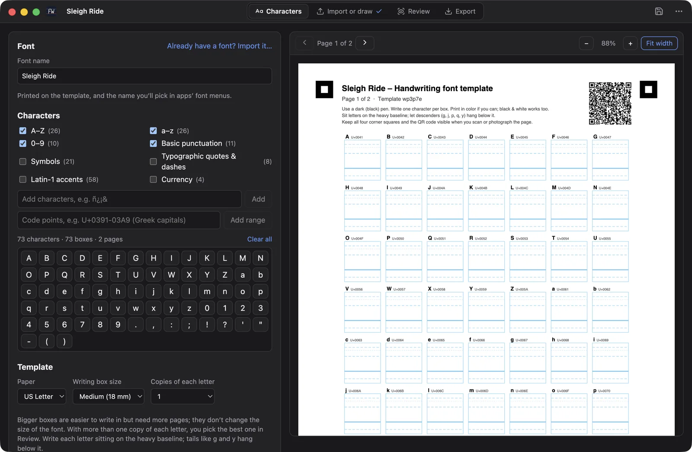
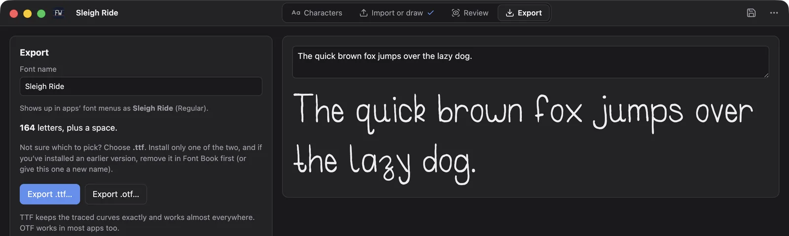
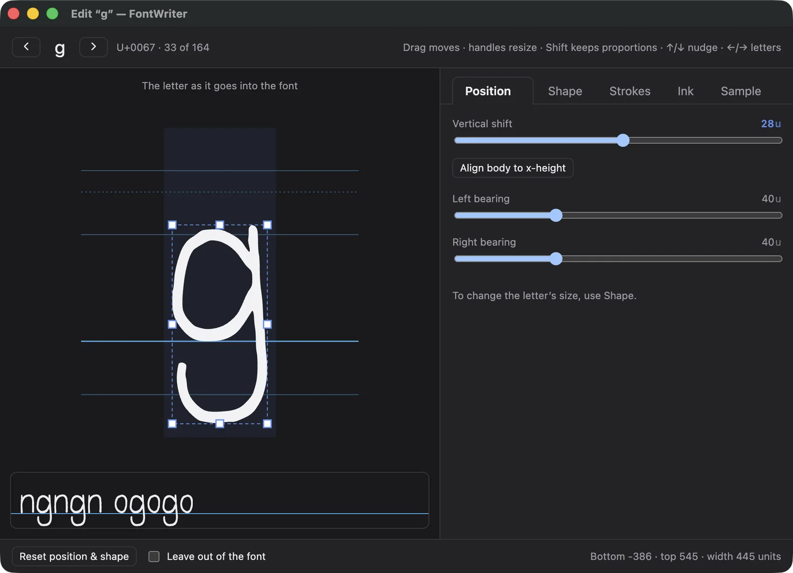
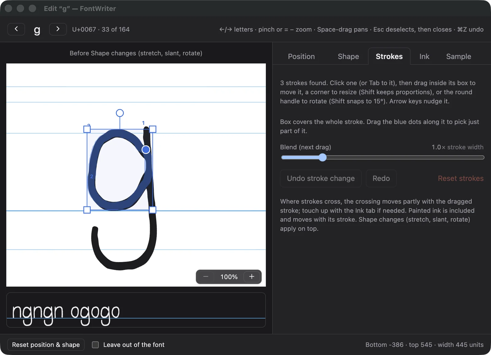
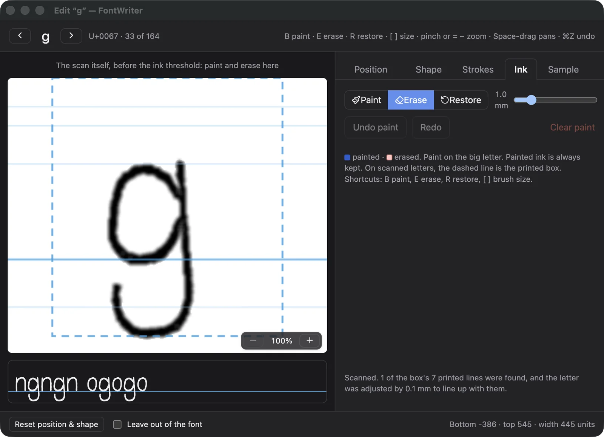

Turn your handwriting into a real font.
Print a template, write on it, and scan it back. FontWriter reads every letter and builds an OTF or TTF font you can install and type with.
macOS 13 or later · Apple silicon
The headings on this page are set in Architect, a handwriting font made with FontWriter.

Three ways to start
- Write on paper. Print a template, fill it in with your favourite pen, and scan or photograph it.
- Draw in the app. Draw each letter with a mouse, trackpad or pen tablet. Pressing lighter draws a thinner line.
- Fix up a font. Open an existing TTF or OTF, then align and reshape its letters.


Every letter keeps its true height
Most handwriting font tools crop each letter to its own box. That lifts the tail of a g up onto the baseline and makes small letters as tall as capitals. FontWriter measures every letter from the printed baseline of its own box and uses one scale for all of them, so tails hang, small letters stay small, and your writing looks like your writing.
The printed guide lines sit exactly at the font's ascender, cap height, x-height, baseline and descender.
How it works
-
1
Pick your characters
Start from presets like A to Z, digits, punctuation, accented letters and currency symbols, or type any characters you want. FontWriter lays them out on a printable template with a box for each one.
The guide lines print in a light cyan that disappears when the page is scanned, and a QR code on every page tells the app exactly which letters are on it.

-
2
Scan it back, or draw
Drop in scans or phone photos, in any order. The corner squares straighten a photo taken at an angle, and PDFs from office scanners work too.
Prefer to skip the paper? Draw each letter right in the app on the same guide lines, with pressure from a pen tablet.
-
3
Review every letter
See the whole font at once, and try it out in the preview line. Tune the stroke weight and ink threshold for every letter together, set the spacing, and use Auto-align and Even heights to tidy things up in one click.
-
4
Export and install
Preview the finished font with any text you like, then export it as a .ttf or .otf file. Open it in Font Book to install it, and type with your handwriting anywhere on your Mac.



A letter editor for the details
Open any letter in its own window and fix it by hand. Drag its box to move or stretch it, with handles that snap to the guide lines.






- Position and Shape. Shift, resize, slant and rotate a letter, or stretch its top to a guide line.
- Sample. Wrote a letter more than once? Pick the copy you like best.
- Live context. The letter is shown next to its neighbours in the font you're building, as you edit it.
The details
Private by design
Everything happens on your Mac. Your scans and letters never leave it, and the app works offline.
Pages in any order
The QR code on each page carries its letters, so you can scan pages whenever and however you like.
Projects you can come back to
Save your work as a project file, reopen it later, and pick up exactly where you stopped.
macOS 13 or later · Apple silicon